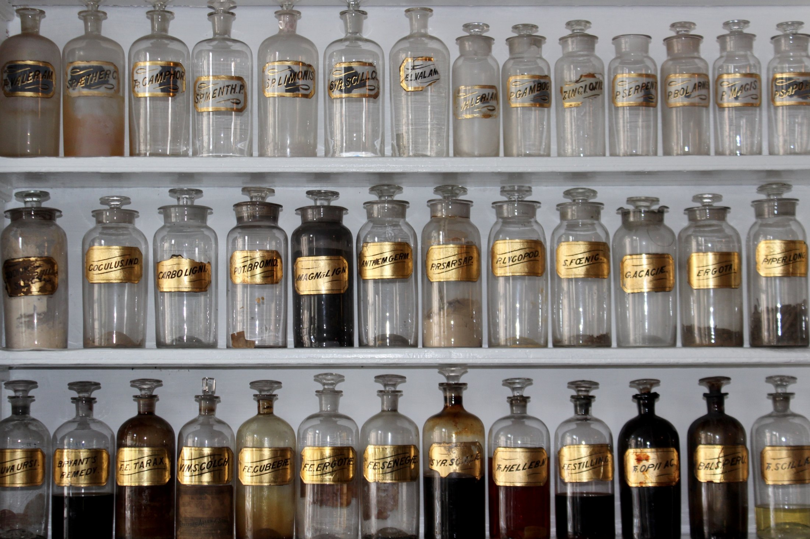
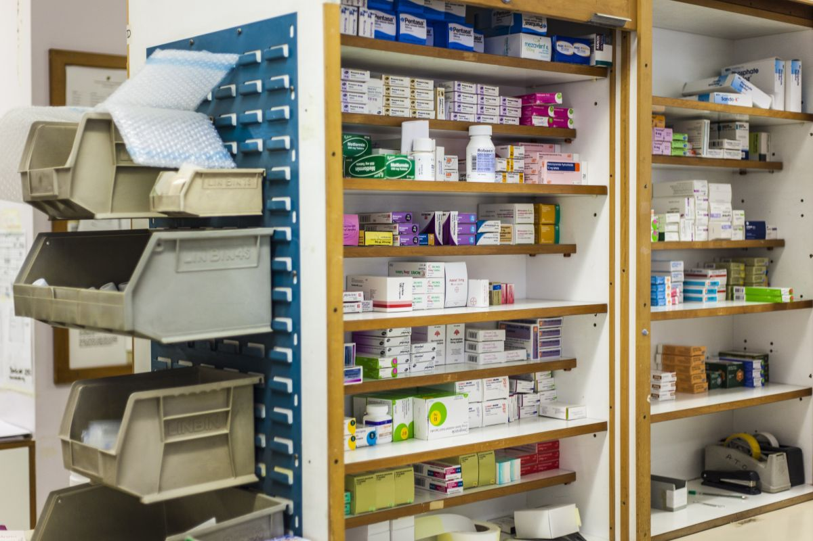
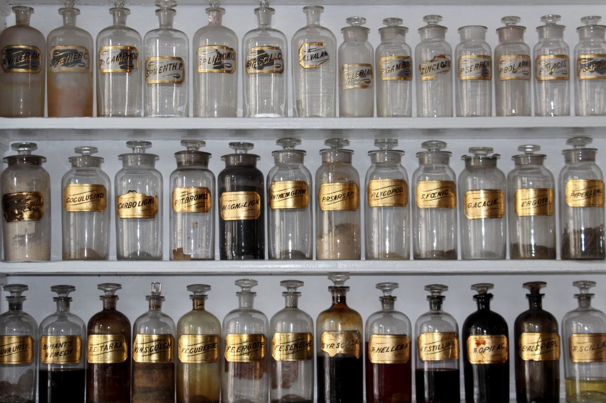

Local 1
Pedro Montt 638
- Horario
- falta
- Teléfono
- 45 247 1095
Loncoche · Región de La Araucanía
Farmacia independiente, con dos locales en Loncoche. Sin letrero de oferta, sin aplicación que descargar: un mesón y alguien detrás que contesta.
01 — La pieza que ninguna cadena pone por escrito
Hay cosas que no necesitan hora con el médico y que igual la gente se queda con la duda. Un químico farmacéutico puede resolverlas ahí mismo, gratis, mientras le pasan el remedio.
Esto es orientación general sobre lo que se puede consultar en una farmacia. No es indicación médica y no reemplaza al médico ni al químico farmacéutico: quién puede responder cada cosa y hasta dónde, lo define el profesional a cargo del local.
Una farmacia de pueblo
no compite por precio.
Compite por confianza.
02 — Los dos locales
Local 1
Local 2
Las dos direcciones salen de las fichas de Google de Farmacia Francia. Los horarios de cada local y el número exacto del segundo no están publicados: son lo primero que hay que agregar, porque es lo que la gente busca antes de salir de la casa.

Lo que dijo un vecino en una reseña
«De los negocios emblemáticos de Loncoche.»
03 — Qué se encuentra
La página que sigue a esta demo debería listar lo que Farmacia Francia efectivamente tiene y lo que consigue por encargo. Esto es un ejemplo de la forma, no un inventario real:
Lista de ejemplo. Lo que va acá lo define el dueño, y conviene que sea corto y verdadero: una lista honesta de seis líneas vende más que una de veinte inventada.
04 — El local


05 — Contacto
Si el remedio que busca no está, conviene llamar antes de ir: en una farmacia independiente casi todo se puede encargar.
Para el dueño de Farmacia Francia
Las cadenas no le ganan por tener mejor farmacia: le ganan porque cuando alguien busca «farmacia Loncoche» o «bioequivalente» aparecen ellas. Usted tiene dos locales en el pueblo y no aparece.
Lo que una cadena no puede copiar es esto: que la persona del mesón conteste. Esa es toda la página. En vez de una lista de productos —que ellos siempre van a tener más larga— la página muestra lo que se puede preguntar y que alguien responde.